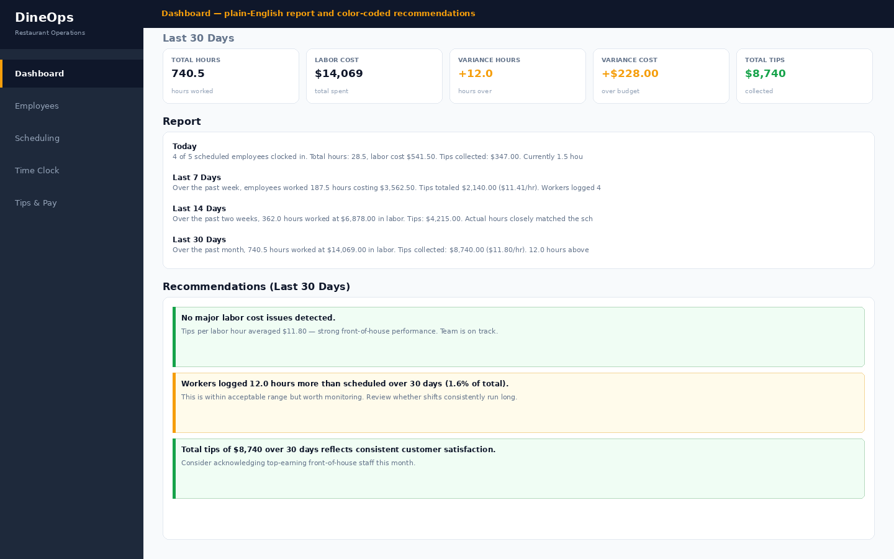
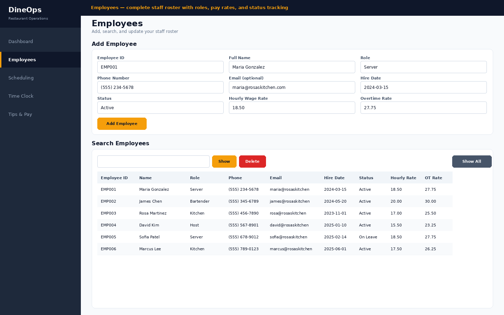
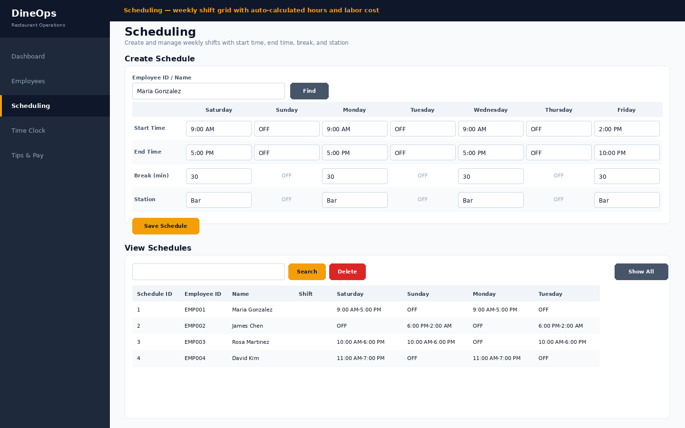
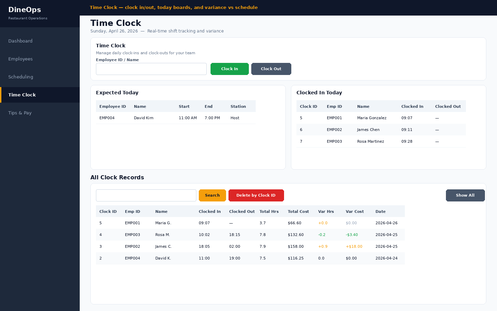
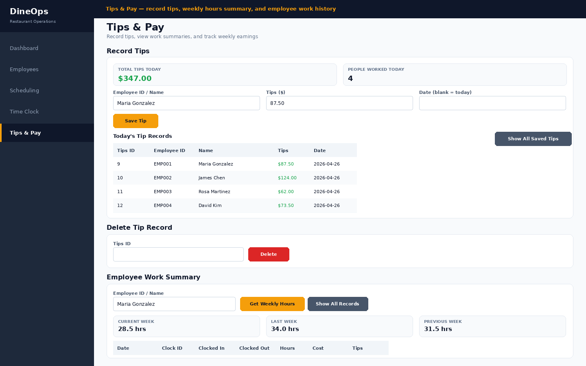

What it does
Most restaurant management software is a SaaS subscription that charges you every month, requires an internet connection, and stores your staff data on someone else's servers. DineOps is the opposite — it runs entirely offline on your Windows PC, costs nothing to keep running, and gives small restaurants the same operational visibility that large chains pay hundreds a month for.
Schedule your team, track actual hours against the plan, record tips, and let the Dashboard turn all of it into plain-English reports and color-coded recommendations automatically. No spreadsheets, no manual calculations, no data leaving your machine.
Five modules, one restaurant
Dashboard
Today's labor metrics plus 7, 14, and 30-day trends. Auto-generated plain-English reports and color-coded recommendations — no manual reporting needed.
Employees
Complete staff roster with roles, pay rates, hire dates, and status. Partial updates, search by name or ID, and a terminated status that blocks scheduling.
Scheduling
Weekly shift builder with start time, end time, break, and station per day. Total hours and projected labor cost calculated automatically. Overnight shifts handled.
Time Clock
Clock in and out by name or ID. See who's expected today vs who's actually in. Real-time variance shows how actual hours and cost compare to the schedule.
Tips & Pay
Record tips per employee per shift. View each person's complete work history — hours and tips side by side. Current, last, and previous week hours at a glance.
Fully offline
All data stored locally in a SQLite database on your PC. Nothing is transmitted. No account needed. Back up by copying one file.
Why offline matters
- Your staff's pay rates, hours, and personal details stay on your machine — not on a vendor's server
- Works during internet outages — the busiest nights are the worst time for cloud software to fail
- No monthly fee means you own it permanently from day one
- Faster than any web app — opens instantly, responds immediately
A look inside





Good to know
DineOps is a native WPF app for Windows 10 and 11. All data is stored locally in %LOCALAPPDATA%\DineOps\DineOps.db — a single file you can back up by copying it anywhere. There are no accounts, no network requests, and no telemetry. Built for restaurants with 3 to 15 employees. Available on the Microsoft Store.